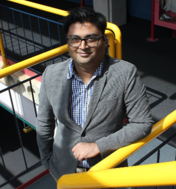

PhD Candidate, UWaterloo & AI scientist in residence @NEXTAI

My research centers around Deep Learning and its application in Computer Vision. Specifically, the research problem I am currently focusing on is: How to make current deep models interpretable (Explainable-AI) and "compact" enough (Scalable AI) for real time client side applications.
I am a first year PhD student at VIP lab - University of Waterloo and Machine Learning Research Group - University of Guelph where I am supervised by Dr. Alexander Wong (UWaterloo) and Dr. Graham Taylor (UGuelph/ Vector Inst.). Before this, I completed my MASc. in WAVE lab & VIP lab at University of Waterloo, where I worked with Dr. Steven Waslander and Prof. David Clausi.
Previous to joining UWaterloo, I was a research engineer in LIP-6 - UPMC-Sorbonne University, Paris. There I had great time working with Prof. Matthieu Cord and Asst. Prof Nicolas Thome
I also frequently collaborate with: Prof. Farzad Khalvati, University of Toronto, Dr. Angelo Zilleti, FHI-Max Planck Berlin and Amarjot Singh , University of Cambridge.
For a full history, here's my Curriculum-Vitæ, Google Scholar and LinkedIn.
VISIIR web demo Food recognition system based on the work that I did at LIP-6, Paris.
More projects can be found on my GitHub profile.
UPMC-101 Dataset of 101 food categories (~1000 images per category) that I created from Google image search results.
Under Construction!!